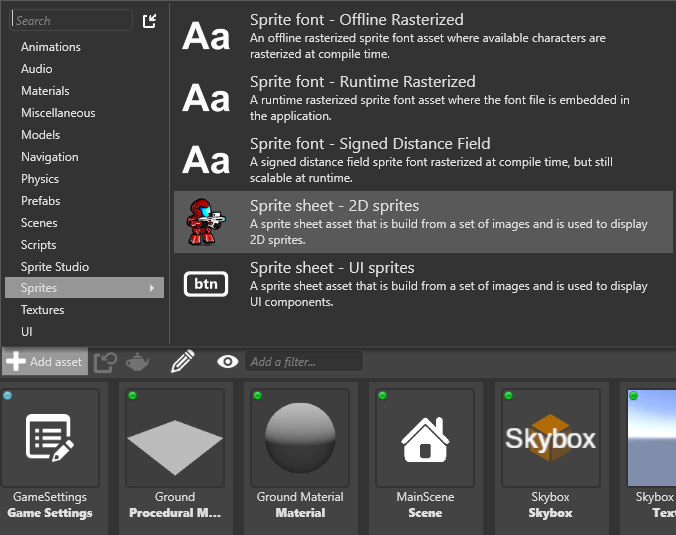

Импорт спрайт-листов
Начинающий Дизайнер
Вы можете импортировать листы спрайтов (файлы изображений, содержащие спрайты) так же, как и любой другой тип ресурсов.
Перетащите файл спрайт-листа из Проводника в Просмотр активов (Asset View) Game Studio .
Либо в Просмотре активов (Asset View) нажмите Добавить актив (Add asset).
Выберите предустановку для листа спрайтов.
Если вы хотите использовать таблицу спрайтов для элементов пользовательского интерфейса, таких как кнопки меню, выберите Лист спрайтов - Спрайты пользовательского интерфейса (Sprite sheet - UI sprites). Это позволяет вам установить границы спрайта (см. [Установка границ спрайта]).(set-sprite-borders.md)). В противном случае выберите Лист спрайтов - 2D спрайты (Sprite sheet - 2D sprites).
Note
Вы можете внести изменения в любое время. Для получения дополнительной информации см. Редактирование спрайтов.

Game Studio добавляет ассет спрайт-листа.